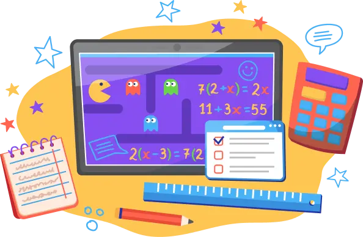

<section class="reasons">
   <div class="wrapper">
       <h2 class="reasons__title">
           Дети любят наши уроки потому что:
       </h2>
       <div class="reasons__inner">
           <div class="reasons__column">
               <ul class="reasons__cards">
                   <li class="reasons__card reasons__card_dedicated">
                       
                       <div class="reasons__texts">
                           <h4 class="reasons__card-title reasons__card-title_dedicated">
                               Продвинутая геймификация
                           </h4>
                           <p>
                               Мы используем мини-игры чтобы увлечь ребенка в процесс решения задач и помочь усвоить материал в интересной форме
                           </p>
                       </div>
                   </li>
                   <li class="reasons__card">
                       
                       <div class="reasons__texts">
                           <h4 class="reasons__card-title">
                               Не зубрят и не переписывают учебники
                           </h4>
                           <p>
                               Дети вовлечены в урок по средствам взаимодействия между собой и педагогом. Играют в тематические квизы. Смотрят видео и разбирают материал.
                           </p>
                       </div>
                   </li>
                   <li class="reasons__card">
                       
                       <div class="reasons__texts">
                           <h4 class="reasons__card-title">
                               Никакого стресса
                           </h4>
                           <p>
                               В учебных классах поддерживается атмосфера дружбы и уважения. Никакого давления. Дети чувствуют себя комфортно
                           </p>
                       </div>
                   </li>
               </ul>
               @@include('../../bem-blocks/_button-group/_button-group.html')
           </div>
           
       </div>
   </div>
</section>